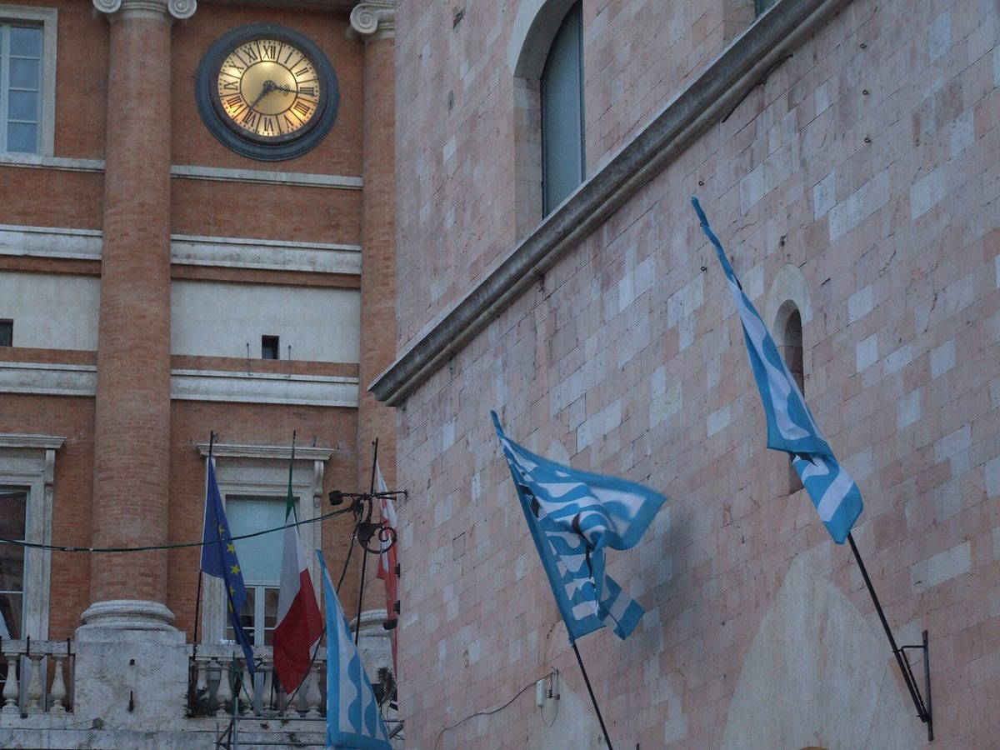

이탈리아 폴리뇨시, 8개 시·군 공공 재생에너지공동체 '체르-토스' 가입 논의…시의회 상임위서 여야 대체로 찬성

가입하면 시는 20유로, 시민은 1유로 내고 쓴 전기만큼 지원금…시·군 몫 수익은 설비 확대나 공공 서비스에만 쓰도록 묶어, 가입 여부는 시의회 본회의로
이탈리아 움브리아주 폴리뇨시 시의회 제2상임위원회가 3일 회의를 열고 인근 8개 시·군이 회원으로 있는 재생에너지공동체(CER) '체르-토스(Cer-Tos)'에 시가 들어가는 안을 논의했으며, 여야 위원 대부분이 찬성 의견을 냈다. 체르-토스는 '올리브기름과 사그란티노의 땅 시·군 연합'에 속한 베바냐·트레비·괄도카타네오·몬테팔코 등 8개 기초지자체가 만든 공동체로, 공동체에서 생긴 수익은 시민에게 다시 투자하고 전기를 생산한 시·군이 받는 돈은 발전 설비를 늘리거나 공공 서비스에 쓰도록 용도를 묶어 두었다. 폴리뇨시가 가입하면 상징적 금액인 20유로를 내고, 뒤이어 들어오는 시민은 1유로를 내고 공동체가 만든 전기를 쓴 만큼 지원금을 받게 된다. 상임위에 나온 체르-토스 회장 엔리코 발렌티니 괄도카타네오 시장은 회원이 모두 공공 주체여서 "이익이 아니라 에너지 나눔"을 기준으로 움직인다고 설명했고, 실비아 보라소 사무국장은 이 지원금이 곧 환경에너지안보부 장관령에 따라 전기요금에서 바로 빼 주는 방식으로 바뀔 것이라고 말했다. 다수파 위원들은 모두 찬성했고 야당인 오성운동의 다비드 판타우치 의원도 움브리아 세 번째 도시로서 공동체를 이끌어야 한다며 동의했지만, '파토 X 폴리뇨'의 마리아 프리제리 의원은 시 자체 공동체를 새로 만들지 않고 기존 공동체에 들어가는 이유를 따져 물었다. 마르코 체사로 시 환경 담당 위원은 가입하면 시와 시민이 전기요금을 크게 아낄 수 있다며 2019년에는 시가 지금보다 에너지에 해마다 80만 유로를 덜 썼다고 말했고, 가입 여부는 앞으로 시의회 본회의에서 다뤄진다.
시민에너지 관점
이탈리아는 2023년 말 장관령으로 재생에너지공동체가 안에서 나눠 쓴 전기에 20년 동안 장려금을 주는 제도를 갖췄고, 체르-토스는 그 위에서 작은 시·군들이 손잡고 공공 회원만으로 세운 공동체다. 지자체가 앞장서면 주민은 구경꾼이 된다는 우려가 있지만, 시민 가입비를 1유로로 낮추고 쓴 전기만큼 지원금을 돌려주며 시·군 몫의 수익은 설비 확대와 공공 서비스에만 쓰게 묶은 구조는 공공이 문을 열고 이익을 지역에 붙잡아 두는 장치가 된다. 이웃 시·군이 함께 만든 공동체에 큰 도시가 따로 판을 벌이지 않고 합류하면 나눌 전기와 몫이 함께 커지고, 그 이익은 외부 투자자가 아니라 회원인 주민과 지자체에 남는다. 우리 시·군도 이웃 지자체와 함께 공공 재생에너지공동체를 세워 주민이 적은 돈으로 들어올 수 있게 하고, 수익의 쓰임을 처음부터 규약으로 묶어 두어야 한다.
출처: RguNotizie 2026-11-03 David Orfei 원문 보기
창간 전 시험 발행 기사입니다.
イタリア・フォリーニョ市、8市町の公共再生可能エネルギー共同体「チェル・トス」への加入を議論…市議会常任委で与野党おおむね賛成
加入すれば市は20ユーロ、市民は1ユーロを払い、使った電気に応じて支援金…市町の取り分の収益は設備拡大か公共サービスにしか使えないよう縛り、加入の可否は市議会本会議へ
イタリア中部ウンブリア州フォリーニョ市の市議会第2常任委員会は3日、近隣の8市町が会員となっている再生可能エネルギー共同体（CER）「チェル・トス（Cer-Tos）」に市が加わる案を議論し、与野党の委員の大半が賛成の意見を示した。チェル・トスは「オリーブオイルとサグランティーノの地・市町連合」に属するベヴァーニャ、トレヴィ、グアルド・カッターネオ、モンテファルコなど8つの基礎自治体がつくった共同体で、共同体で生じた収益は市民に再投資し、電気を生産した市町が受け取るお金は発電設備の増強か公共サービスに使うよう用途を縛っている。フォリーニョ市が加入する場合は象徴的な額の20ユーロを払い、続いて加わる市民は1ユーロを払って、共同体がつくった電気を使った分に応じた支援金を受け取ることになる。委員会に出席したチェル・トス会長のエンリコ・ヴァレンティーニ・グアルド・カッターネオ市長は、会員がすべて公共主体のため「利益ではなくエネルギーの分かち合い」を基準に動いていると説明し、シルヴィア・ボラッソ事務局長は、この支援金が近く環境エネルギー安全保障省の省令によって電気料金から直接差し引かれる形に変わると述べた。多数派の委員は全員が賛成し、野党・五つ星運動のダヴィデ・ファンタウッツィ議員もウンブリア第3の都市として共同体を引っ張るべきだと同意したが、「パット・X・フォリーニョ」のマリア・フリジェーリ議員は、市独自の共同体を新たにつくらず既存の共同体に加わる理由をただした。マルコ・チェザーロ市環境担当委員は、加入すれば市と市民が電気料金を大きく節約できるとして、2019年には市が今よりエネルギーに年間80万ユーロ少なく支出していたと述べ、加入の可否は今後、市議会本会議で扱われる。
市民エネルギーの視点
イタリアは2023年末の省令で、再生可能エネルギー共同体の中で分け合った電気に20年間奨励金を支払う制度を整え、チェル・トスはその上に小さな市町が手を組み、公共の会員だけで立ち上げた共同体だ。自治体が先頭に立てば住民は見物人になるとの懸念もあるが、市民の加入費を1ユーロに抑え、使った電気に応じて支援金を返し、市町の取り分の収益を設備拡大と公共サービスにしか使えないよう縛る仕組みは、公共が門を開き、利益を地域につなぎとめる装置になる。近隣の市町が一緒につくった共同体に大きな都市が別の場を設けずに合流すれば、分け合う電気と取り分がともに大きくなり、その利益は外部の投資家ではなく会員である住民と自治体に残る。韓国の市・郡も近隣の自治体と共に公共の再生可能エネルギー共同体を立ち上げ、住民が少ない金額で加われるようにし、収益の使い道を最初から規約で縛っておくべきだ。
出典: RguNotizie 2026-11-03 David Orfei 原文を読む
創刊前の試験発行記事です。
意大利福利尼奥市讨论加入8个市镇的公共可再生能源社区"Cer-Tos"…市议会常设委员会朝野大体赞成
若加入，市政府付20欧元、市民付1欧元，按用电量获得补贴…市镇所得收益限定只能用于扩建设施或公共服务，是否加入将交市议会全体会议决定
意大利翁布里亚大区福利尼奥市议会第二常设委员会3日开会，讨论该市加入由邻近8个市镇组成的可再生能源社区（CER）"Cer-Tos"的方案，朝野委员大多表示赞成。Cer-Tos是隶属"橄榄油与萨格兰蒂诺之地市镇联盟"的贝瓦尼亚、特雷维、瓜尔多卡塔内奥、蒙特法尔科等8个基层市镇建立的社区，社区产生的收益再投资于市民，发电市镇所得款项的用途受到限定，只能用于扩建发电设施或公共服务。福利尼奥市若加入，需支付象征性的20欧元，随后加入的市民只需付1欧元，即可按使用社区所发电量的多少获得补贴。出席委员会的Cer-Tos主席、瓜尔多卡塔内奥市长恩里科·瓦伦蒂尼表示，由于会员全是公共主体，社区以"能源共享而非利润"为准则运作；秘书长西尔维娅·博拉索则说，这笔补贴不久将依据环境与能源安全部的部令，改为直接从电费中扣除。多数派委员全部赞成，反对党五星运动议员达维德·凡陶齐也表示同意，认为作为翁布里亚第三大城市应当带动这一社区；但"Patto X Foligno"议员玛丽亚·弗里杰里质疑为何不新建本市自己的社区，而要加入现有社区。市环境事务委员马尔科·切萨罗表示，加入后市政府和市民都能大幅节省电费，并称2019年市政府每年在能源上的支出比现在少80万欧元；是否加入今后将由市议会全体会议审议。
市民能源视角
意大利在2023年底通过部令建立了制度，对可再生能源社区内部共享的电力连续20年发放奖励金；Cer-Tos正是小市镇在此基础上携手、仅由公共会员组建的社区。有人担心地方政府一旦领头，居民就会沦为旁观者，但把市民入会费降到1欧元、按用电量返还补贴、并把市镇所得收益限定用于扩建设施和公共服务，这一结构正是由公共部门打开大门、把收益留在本地的机制。大城市若不另起炉灶而是加入邻近市镇共同建立的社区，可共享的电力和份额都会随之扩大，而收益留给的不是外部投资者，而是作为会员的居民和地方政府。韩国的市郡也应与邻近地方政府共同建立公共可再生能源社区，让居民以少量资金即可加入，并从一开始就用章程锁定收益的用途。
来源: RguNotizie 2026-11-03 David Orfei 查看原文
本文为创刊前试发行文章。
Italy's Foligno weighs joining 'Cer-Tos', a public renewable energy community of eight towns; council committee broadly in favour across party lines
If it joins, the city would pay 20 euros and residents 1 euro each, with support payments based on the power they use; towns' share of the revenue is earmarked for new plants or public services, and the final decision goes to the full council
The second standing committee of the city council of Foligno, in Italy's Umbria region, met on Nov. 3 to discuss a proposal for the city to join Cer-Tos, a renewable energy community (CER) whose members are eight neighbouring municipalities, and most committee members on both sides voiced support. Cer-Tos was set up by eight towns in the Union of Municipalities of the Lands of Olive Oil and Sagrantino, including Bevagna, Trevi, Gualdo Cattaneo and Montefalco; revenue generated by the community is reinvested in residents, and money received by the towns that produce electricity is earmarked for expanding generation or for public services. If Foligno joins, it would pay a symbolic 20 euros, and residents who follow would pay 1 euro each and receive support payments based on how much of the community's electricity they use. Cer-Tos president Enrico Valentini, mayor of Gualdo Cattaneo, told the committee that because all members are public bodies the community works on the basis of "sharing energy, not profit," and secretary Silvia Borasso said the payments would soon become a direct deduction on electricity bills under a decree from the Ministry of Environment and Energy Security. Majority members backed the idea unanimously and David Fantauzzi of the opposition Five Star Movement also agreed, saying Umbria's third-largest city should help lead the community, while Maria Frigeri of Patto X Foligno asked why the city was joining an existing community rather than creating its own. Marco Cesaro, the city's environment councillor, said joining would let the city and its residents save a great deal on electricity bills, noting that in 2019 the city spent 800,000 euros a year less on energy than it does now; the question will next go to the full city council.
Citizen Energy View
Italy put in place a ministerial decree at the end of 2023 that pays an incentive for 20 years on electricity shared within renewable energy communities, and Cer-Tos is a community that small towns built on that basis with public members only. There is a worry that when local governments lead, residents end up as spectators, but setting residents' entry fee at 1 euro, returning support payments according to the power they use and restricting the towns' share of revenue to new plants and public services is a way for the public sector to open the door while keeping the benefits local. When a larger city joins a community its neighbours have already built instead of starting its own, the electricity and the shares to divide grow together, and the gains stay with member residents and municipalities rather than outside investors. Korean cities and counties should likewise join neighbouring local governments to set up public renewable energy communities that residents can enter for a small sum, and write the uses of the revenue into the rules from the start.
Source: RguNotizie 2026-11-03 David Orfei Read the original
This article was published during the trial period before launch.